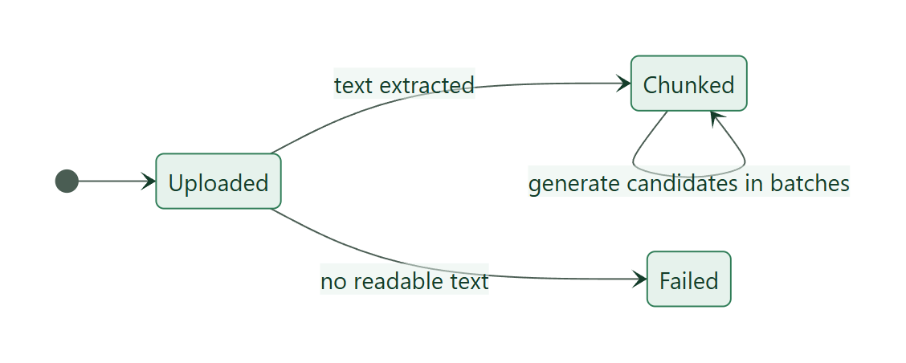
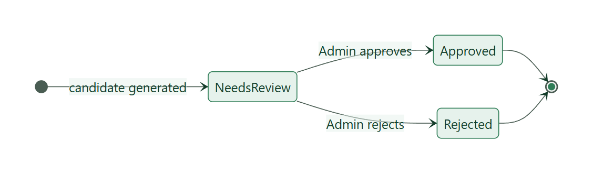
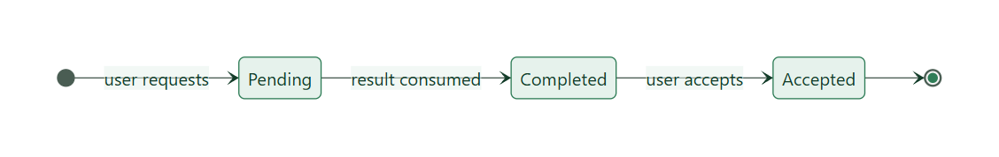
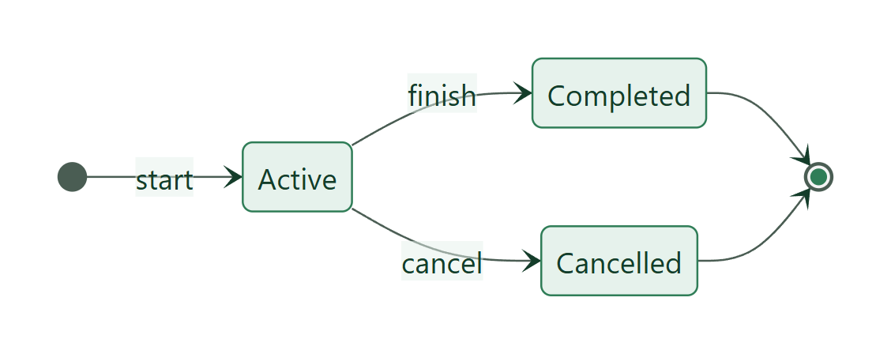

Longevity Diet Platform — catalogue of rules enforced by the system
Document
Business Rules Specification
Version
1.0 (2026-11-12)
Source of truth
Application-layer services, AGENTS.md, EF Core configuration
Status
Verified against the code base (94 automated tests passing)
1. Purpose and conventions
This document lists every business rule that the Longevity Diet Platform enforces, grouped by domain. Each rule has an ID (BR-xx), a plain statement, the service that enforces it and the response the client receives when it is broken. Rules are enforced in the Application layer of each service (never in controllers), so they apply no matter which client calls the API.
Product boundary. The platform is educational: diet planning and tracking inspired by the book The Longevity Diet. It never diagnoses, treats, predicts disease or lifespan, or gives medical advice (BR-01).
Error mapping used by all REST services (GlobalExceptionHandlingMiddleware): validation failure → 400; missing/invalid token → 401; wrong role → 403; resource not found or owned by someone else → 404; duplicate / state conflict → 409. Every response uses the same envelope { succeeded, data, message, errors, traceId }.
Rule index
Group
Rules
Scope & safety
BR-01 – BR-03
Identity & access
BR-04 – BR-12
Diet knowledge
BR-13 – BR-27
Book ingestion & review
BR-28 – BR-36
Meal planning
BR-37 – BR-50
AI recommendation
BR-51 – BR-57
Reminders & notifications
BR-58 – BR-65
Tracking & progress
BR-66 – BR-74
Architecture & data
BR-75 – BR-82
2. Scope and safety rules
ID
Rule
Enforced by
BR-01
The system must never provide diagnosis, treatment, disease-specific advice, disease prediction or lifespan prediction. AI output is filtered by a safety policy and always carries a disclaimer.
Recommendation Service (RecommendationSafetyPolicy)
BR-02
Content is limited to the book-based domain: guidelines, foods, recipes, regimens, meal plans, tracking, reminders. No payments, social network, wearables, media storage or mobile app.
Scope (AGENTS.md)
BR-03
Uploaded book PDFs and raw extracted chunks are Admin-only. They never appear in public endpoints, search results or AI context. PDFs are not committed to git.
Diet Knowledge (admin routes, public filters)
3. Identity and access rules
ID
Rule
Response / Layer
BR-04
Email is required, must be a valid address and is unique case-insensitively (stored as NormalizedEmail).
400 / 409 · Identity
BR-05
Password must have at least 8 characters; it is stored only as a PBKDF2 hash, never in clear text.
400 · Identity
BR-06
A new self-registered account always receives the User role. The Admin role exists only through seeding.
Identity
BR-07
Wrong email or password returns the same generic message, so attackers cannot learn which part was wrong.
401 · Identity
BR-08
An inactive account (IsActive = false) cannot log in.
403 · Identity
BR-09
All services validate the JWT with a shared signing key. A service refuses to start if the key is missing, too short or a public placeholder (unless Development or Jwt__AllowDevelopmentKey=true).
Startup check · ApiDefaults
BR-10
Roles are User and Admin. Every /api/admin/* endpoint requires Admin; browsing public knowledge needs no login.
401/403 · all APIs
BR-11
A user sees and changes only their own meal plans, recommendations, trackings and profile. Another user's id behaves as “not found”.
404 · MealPlanning, Tracking
BR-12
Profile preferences: at most 20 tags, each ≤ 40 characters and without commas; notes ≤ 1000 characters.
400 · Identity
4. Diet knowledge rules
4.1 Review status and visibility
ID
Rule
Layer
BR-13
Every guideline, food, recipe and regimen has a ReviewStatus: NeedsReview, Approved or Rejected.
Diet Knowledge
BR-14
Only items that are Approved and active are returned by public endpoints, used by Meal Planning validation, embedded in VectorDb and fed to the AI.
Diet Knowledge, Recommendation
BR-15
Approving an item requires source metadata: SourceChapter, SourcePage (or reference) and ReviewedBy.
400 · Diet Knowledge
BR-16
Admin can activate/deactivate content without deleting it; deactivated content disappears from public views immediately.
Diet Knowledge
4.2 Uniqueness and composition
ID
Rule
Response
BR-17
Guideline titles, food names, recipe names and regimen names are unique.
409
BR-18
A recipe needs at least one ingredient; each ingredient references an active Approved food; the same food cannot appear twice in one recipe.
400
BR-19
Recipe steps need a number ≥ 1 and an instruction; step numbers are unique inside a recipe.
400
BR-20
A nutrition fact needs a serving size; energy, protein, carbohydrate, fat and fibre values cannot be negative.
400
BR-21
Categories have a type (Food, Recipe or Guideline) and a food's category is mandatory.
400
BR-22
A regimen lasts 1 – 365 days.
400
BR-23
A regimen cannot link the same guideline twice; it may only link active Approved guidelines and recipes.
400
BR-24
A regimen meal has a DayNumber within the regimen duration and a meal slot of Breakfast, Lunch, Dinner or Snack; the same recipe cannot be added twice to the same day and slot.
400
BR-25
Deleting all knowledge removes regimens first, because their links restrict deletion of guidelines and recipes.
Diet Knowledge
4.3 Search
ID
Rule
Layer
BR-26
List endpoints support keyword search, filter, sort (asc|desc) and pagination (page size 1 – 100).
All list APIs
BR-27
Semantic search ranks only embedded Approved items. Rows whose source is no longer Approved/active are removed on the next index run, but only if the whole run embedded successfully. Embeddings come from Gemini or a local fallback model.
VectorDb
5. Book ingestion and review rules

Source document lifecycle

Knowledge candidate lifecycle
ID
Rule
Response
BR-28
Only Admin may upload sources. Accepted formats: PDF or TXT, maximum 25 MB.
400 / 403
BR-29
The file is stored on a private volume; the database holds only metadata, chunks and candidates. A file with no readable text ends as Failed.
400
BR-30
Candidates can be generated only after the document is Chunked, in batches; already analysed chunks are skipped.
400
BR-31
Candidates are summaries produced by Gemini or by a local placeholder generator. They are not knowledge until an Admin approves them.
Diet Knowledge
BR-32
Only a candidate in NeedsReview can be approved or rejected.
400
BR-33
Approval creates an Approved guideline, food or recipe (by CandidateType) and stores its id in ApprovedKnowledgeId.
Diet Knowledge
BR-34
Approval fails if an item with the same title or name already exists.
409
BR-35
A recipe candidate must carry ingredients taken from the book; without them it cannot be approved.
400
BR-36
A rejected candidate keeps a note with the reason; Admin may bulk-reject placeholder candidates or bulk-approve valid ones.
Diet Knowledge
6. Meal planning rules
6.1 Meal slots and time rules
The server runs in UTC; the user's local time is derived from the configurable offset MealPlanning__UtcOffsetMinutes (default 420 = UTC+7).
Meal slot
Default reminder time (local)
Slot ends (local)
Breakfast
07:00
10:00
Lunch
11:00
14:00
Snack
15:00
17:00
Dinner
17:00
21:00
ID
Rule
Response
BR-37
A meal plan has a name, a start date and an end date; start date ≤ end date.
400
BR-38
A meal plan cannot start before today (local date).
400
BR-39
A plan item's date must lie inside the plan's date range. Changing the range is rejected if existing items would fall outside.
400
BR-40
Meal slot must be Breakfast, Lunch, Dinner or Snack (case-insensitive, normalised).
400
BR-41
For today, an item cannot use a slot whose end time has already passed.
400
BR-42
An item references exactly one of: an Approved recipe or an Approved food (never both, never none). Existence and approval are verified through the Diet Knowledge API.
400
BR-43
When editing an item, the past-time check runs again only if date or slot changed; when editing a plan, only if the start date moved.
400
BR-44
A plan may optionally follow a diet regimen; the regimen id is a bare reference (no cross-database foreign key).
MealPlanning
BR-45
Plan list endpoints are paged, filterable and sortable, and return only the caller's plans.
MealPlanning
BR-46
Plan status shown to the user is derived from dates: Upcoming, Active now or Finished.
Web
7. AI recommendation rules

Recommendation request lifecycle
ID
Rule
Response
BR-47
AI is an enhancement, not the source of truth. The final plan exists only after the user accepts it.
MealPlanning
BR-48
A request covers 1 – 14 days and optional preference tags (cleaned and de-duplicated).
400
BR-49
The request and its outbox message are saved in one transaction; the user gets an immediate “Pending” answer.
MealPlanning
BR-50
Allowed statuses: Pending → Completed → Accepted. Only a Completed recommendation can be accepted.
400
BR-51
The AI context contains only active Approved knowledge from the public APIs, ranked by semantic search when available. Raw chunks and unapproved candidates are never used.
Recommendation
BR-52
If Gemini is disabled, fails or returns unsafe text, a safe local fallback recommendation is produced instead.
Recommendation
BR-53
Recommendation Service never writes to MealPlanningDb; it only publishes a result message.
Architecture
BR-54
The user's UI language (English/Vietnamese) is passed along so the answer is in the same language.
Web → Recommendation
BR-55
When a recommendation is accepted, the normal meal plan rules (BR-37 – BR-43) apply. The Web form starts from tomorrow if it is already past 10:00 local time.
MealPlanning, Web
BR-56
Failed deliveries are retried (MaxDeliveryAttempts 3, RetryDelaySeconds 5) and then dead-lettered.
Worker / consumers
BR-57
Every recommendation stores a disclaimer that it is educational, not medical advice.
MealPlanning
8. Reminder and notification rules
ID
Rule
Layer
BR-58
Reminder messages are written to OutboxMessages in the same transaction as the meal item (transactional outbox); a dispatcher publishes them with growing retry delay (max 300 s). Delivery is at least once.
MealPlanning
BR-59
Only reminders whose time is still in the future are scheduled; a due reminder is never sent immediately.
MealPlanning
BR-60
On receipt the Worker sends a confirmation email at once and holds the reminder in a TTL delay queue (short 30 s, long 1 h) until ReminderAtUtc.
Worker
BR-61
Before sending, the Worker asks MealPlanning (/internal/reminders/{id}, header X-Internal-Key) whether the item still exists with that time; stale reminders are dropped.
Worker, MealPlanning
BR-62
Internal endpoints are protected by a shared key and blocked by the gateway (any path containing /internal/ returns 404).
Gateway, MealPlanning
BR-63
Processed outbox rows are deleted after one day.
MealPlanning
BR-64
Email goes through Brevo only when a real API key and sender address are set; otherwise the message is logged (development fallback).
Worker
BR-65
Notification Service stores no history; it only converts a gRPC call into a RabbitMQ message.
Notification
9. Tracking and progress rules

User diet tracking lifecycle
ID
Rule
Response
BR-66
A user may have only one Active diet tracking. Starting another requires finishing or cancelling the first.
409
BR-67
Status values: Active, Completed, Cancelled. A tracking can only be changed to Completed or Cancelled.
400
BR-68
A tracking may reference a regimen and/or a meal plan by id; these ids are not verified against other services.
400 if not valid GUIDs
BR-69
A meal tracking needs a meal plan item id; completing it stores CompletedAtUtc.
400
BR-70
PlannedMealCount (reported by the client) is between 0 and 50. Progress uses the larger of planned count and tracked meals, because Tracking cannot read MealPlanningDb.
400
BR-71
Daily trackings and progress summaries attach automatically to the Active tracking whose period covers the date.
Tracking
BR-72
A progress period needs start date ≤ end date.
400
BR-73
When a day's planned meals are all completed for the first time, Tracking calls Notification over gRPC. A failed notification is logged but never blocks tracking.
Tracking
BR-74
At most one progress notification per summary (LastNotificationSentAtUtc).
Tracking
10. Architecture and data rules
ID
Rule
BR-75
Database per service: IdentityDb, DietKnowledgeDb, MealPlanningDb, TrackingDb, plus VectorDb (pgvector) owned by Diet Knowledge. No service reads another service's database.
BR-76
No foreign keys across databases. Cross-service references are bare IDs (e.g. MealTracking.MealPlanItemId, MealPlan.UserId).
BR-77
Each REST service has the layers API → Application → Infrastructure/Domain. Controllers never use DbContext and never return EF entities (DTOs only).
BR-78
The Web app calls only the API Gateway. Recommendation, Notification and Worker are not routed through the gateway.
BR-79
Synchronous internal call: Tracking → Notification by gRPC. Asynchronous work (AI, reminders, email) uses RabbitMQ with durable queues and dead-letter queues.
BR-80
Each service applies its own EF Core migrations at startup. Recommendation and Notification stay stateless.
BR-81
Gemini and Brevo are optional in development; fallbacks keep the system fully working without external accounts.
BR-82
The Web UI supports English and Vietnamese; every user-facing string must exist in both languages.